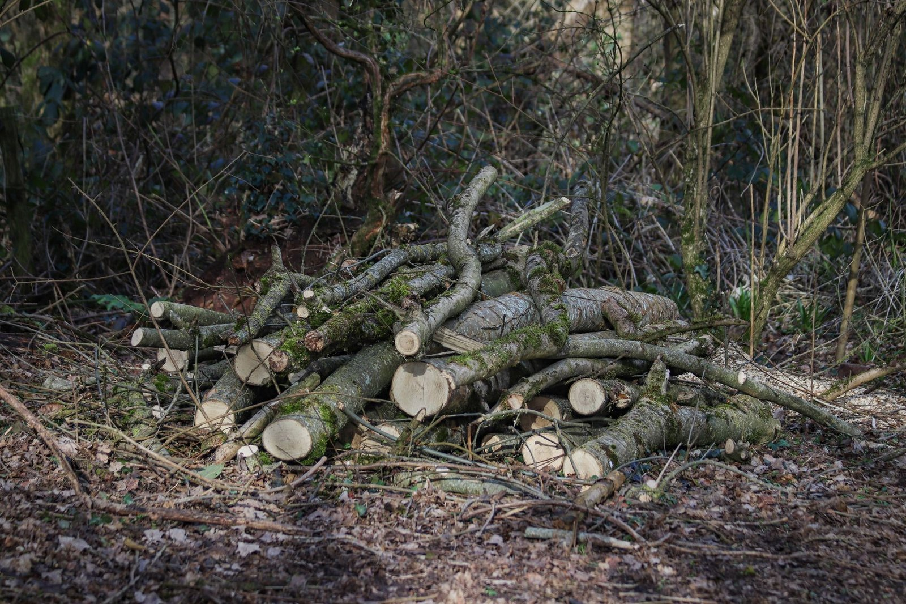
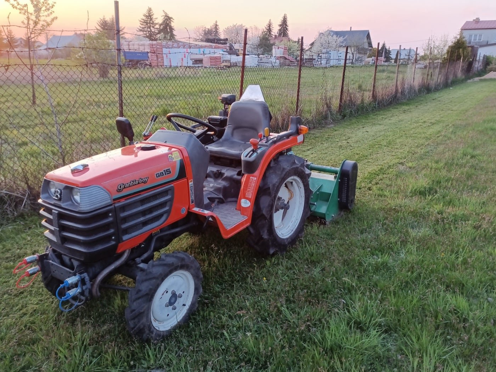
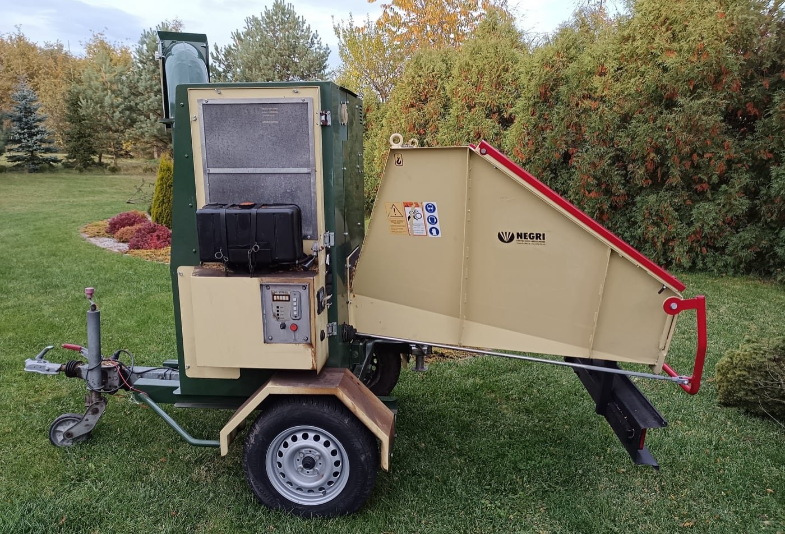
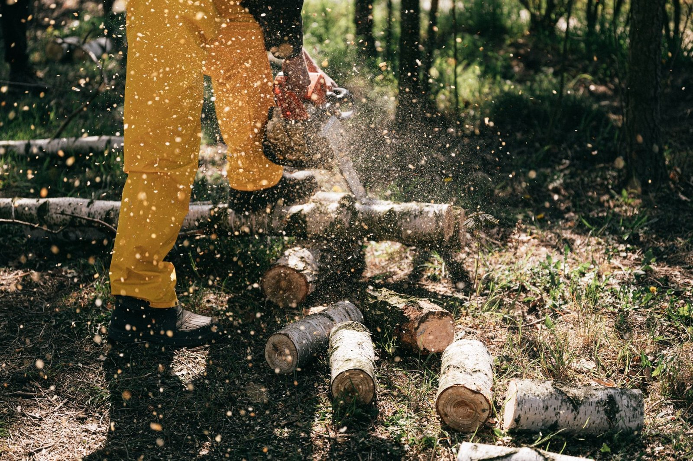
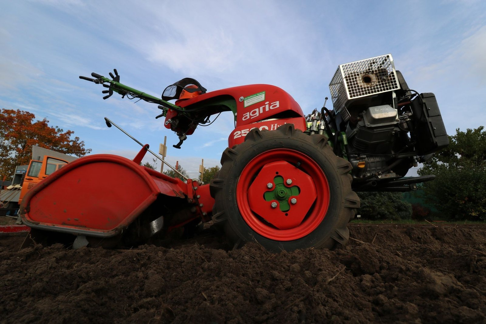
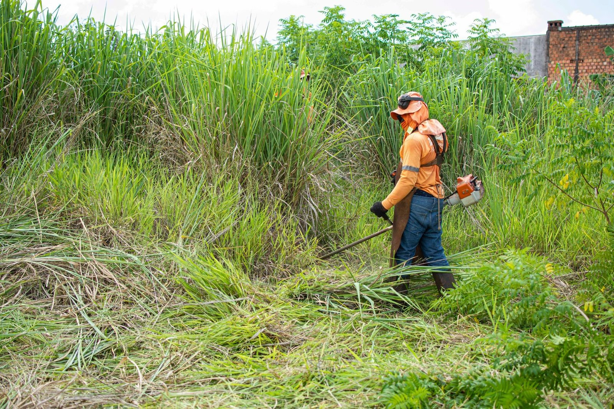
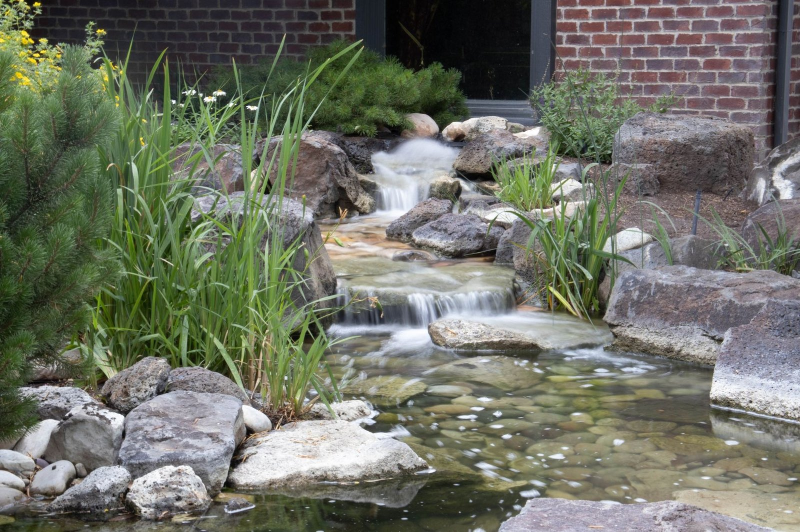

Od jednorazowego wykoszenia działki po uporządkowanie terenu przed sprzedażą. Opisz przez telefon, co się dzieje na miejscu, albo pokaż zdjęcia. Przyjedziemy, obejrzymy i podamy cenę przed rozpoczęciem pracy.

Kosiarka bijakowa za ciągnikiem tam, gdzie trawa sięga pasa, oraz kosy spalinowe przy ogrodzeniach, skarpach i drzewach. Radzimy sobie z terenem zapuszczonym od kilku sezonów.

Gałęzie po cięciu i wycince rozdrabniamy na miejscu. Zrębki możemy zostawić do rozsypania pod krzewy albo zabrać razem z resztą zieleni.

Wycinka drzew, przycinanie drzew owocowych i pielęgnacja młodników. Formujemy też krzewy i tuje, żeby nie zarastały ogrodzenia i podjazdów.

Wyrównanie terenu i przygotowanie ziemi glebogryzarką separacyjną, która wybiera z gruntu kamienie i korzenie. Potem wysiew i pierwsze koszenia.

Karczowanie zarośli, wywóz gałęzi i zieleni, uprzątnięcie terenu. Częsty powód telefonu: działka ma iść na sprzedaż i musi wyglądać na zadbaną.

Wybieramy szlam, liście i przerośniętą roślinność, czyścimy brzegi i teren dookoła. Oczko wraca do stanu, w którym da się przy nim usiąść.
Prosty, przewidywalny proces - wiesz, na czym stoisz na każdym etapie.
Opowiadasz, czego potrzebujesz, a my mówimy, jak to zrobić.
Dostajesz jasną cenę i termin, zanim cokolwiek ruszy.
Robimy na czas i zgodnie z ustaleniami.
Napisz, co chcesz zrobić - odpowiemy z propozycją i wyceną.